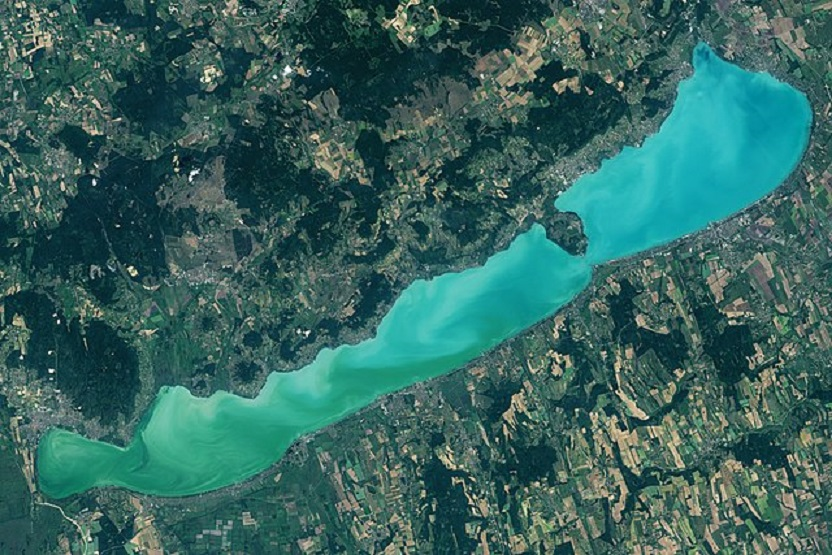

A Balaton vize
A Balaton a legnagyobb tó Magyarországon, és a legfontosabb vízforrások közé tartozik. A tó vize a nyári hónapokban különösen kedvelt a fürdőzők körében.
A Balaton a legnagyobb tó Magyarországon, és a legfontosabb vízforrások közé tartozik. A tó vize a nyári hónapokban különösen kedvelt a fürdőzők körében.
A Tisza-tó Magyarország második legnagyobb mesterséges tava, amely a Tisza folyón alakult ki. 1991-ben hozták létre, és ma a vízi sportok, horgászat, túrázás és természetjárás kedvelt helyszíne. A tó környéke gazdag növény- és állatvilággal rendelkezik, és a környéken számos védett terület is található. A Tisza-tó a pihenés és a kikapcsolódás ideális helyszíne.
A Fertő tó különleges ökológiai jelentőséggel bír, mivel az itt élő fajok és a tó körüli természetvédelmi területek nemcsak a helyi élővilág számára fontosak, hanem nemzetközi szinten is elismertek.
A Hévízi tó a világ egyik legnagyobb termálvize, mely évről évre sok turistát vonz. Az egészségügyi és wellness szempontból is jelentős helyszín.
A Duna Európa második leghosszabb folyója, amely több országot is átszel, köztük Magyarországot is. A folyó több mint 2.800 kilométer hosszan kanyarog, és fontos szerepe van a közlekedésben, vízgazdálkodásban. Budapestet is átszeli, amely a Duna partján fekvő látványos város. A Duna környéke gazdag történelemben, kultúrában, és népszerű turisztikai célpont, ahol a hajózás, horgászat és séta egyaránt népszerű.
A Tisza Magyarország második leghosszabb folyója, amely a Kárpátokból ered, és több mint 1.000 kilométeren keresztül halad. Fontos szerepet játszik a vízgazdálkodásban, és gazdag élővilágot, valamint szép tájakat kínál. A Tisza környéke népszerű a természetkedvelők számára, akik horgászni, túrázni vagy hajózni szeretnének.